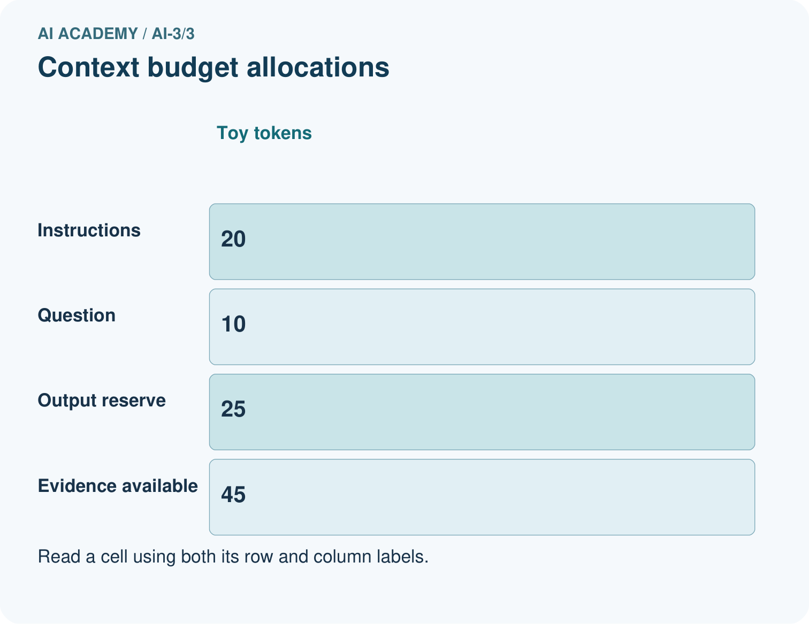
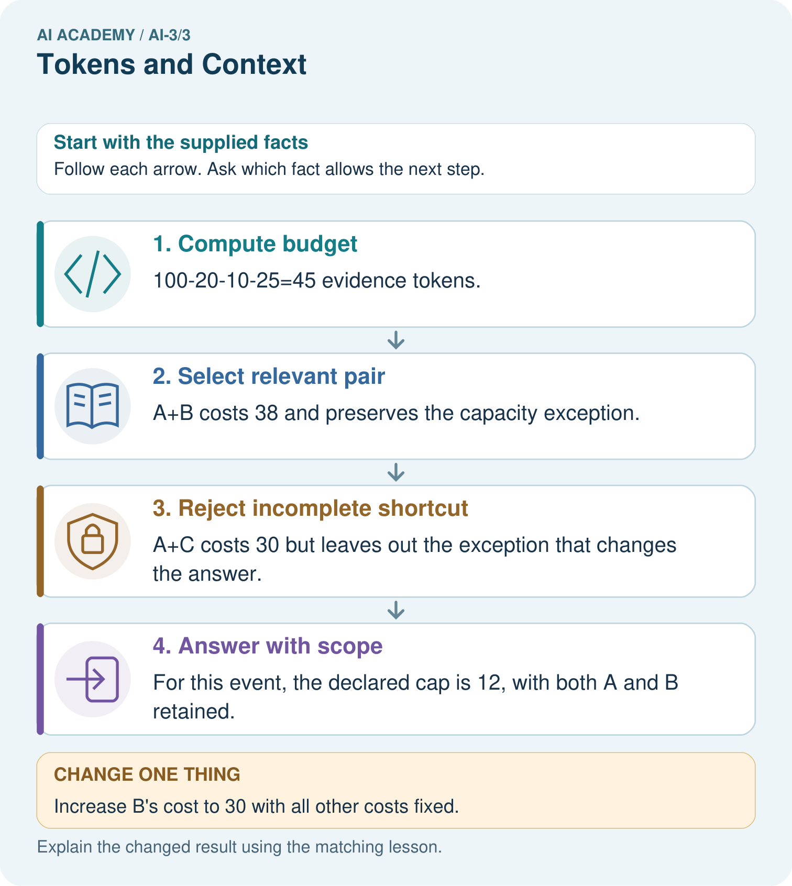
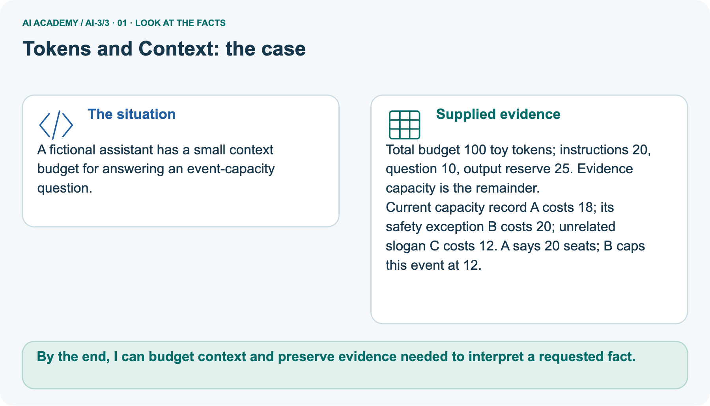
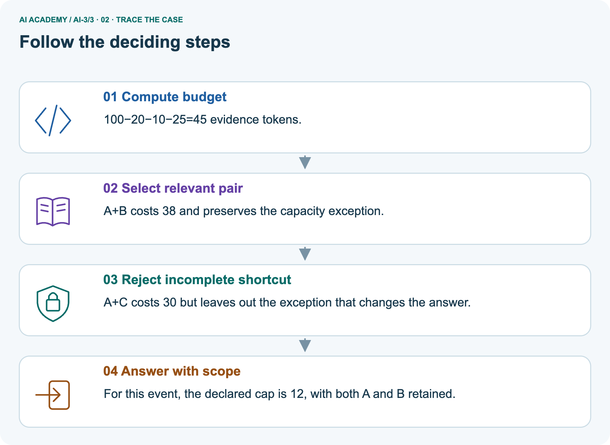
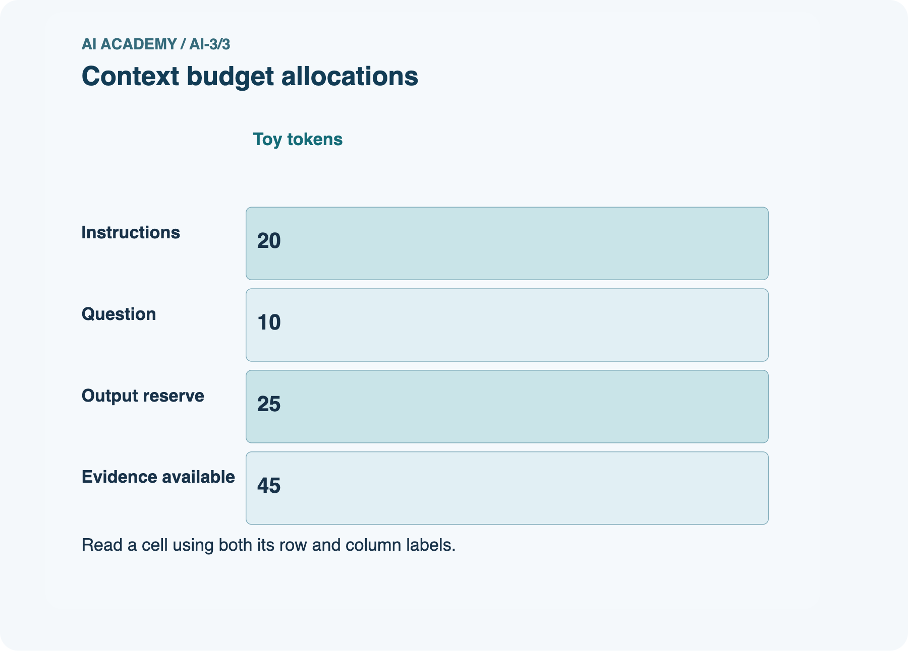
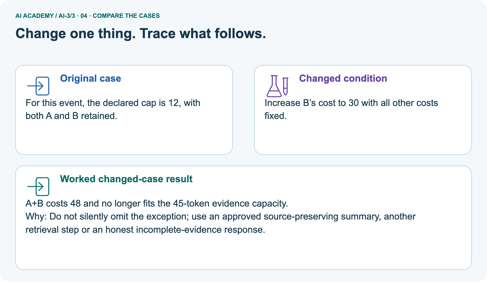
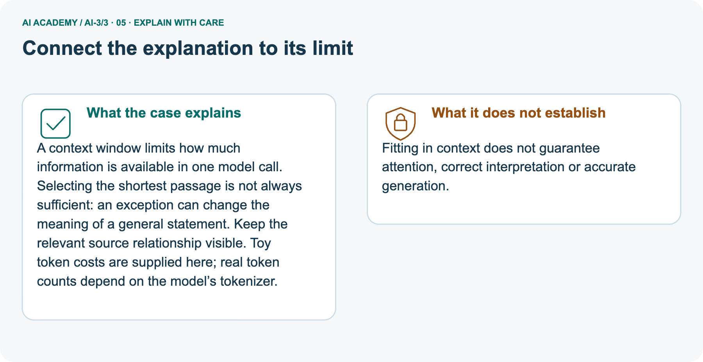
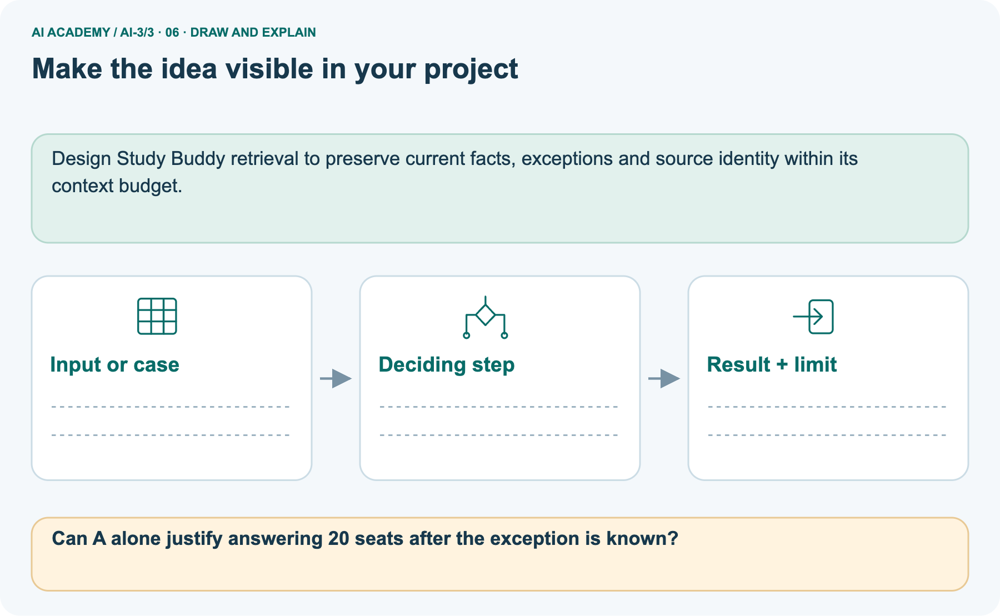

AI Academy · Level 3 · Grade 8 · Week 3 · Workbook
Tokens and Context
Learn to understand, design, build, test and explain AI systems responsibly.
Project: Verified Study Buddy
THE CONNECTED WEEK
One connected context record, with a weighted-information extension.
Compute capacity, choose support, preserve qualifiers and audit inclusion before independent budgeting.
Keep one habit: Keep accounting rules, source identity, exceptions, missing facts and evidence limits visible.
Main lesson · Section 1
Recall · Retrieve earlier ideas
Try before opening notes.
Your evidence record
Try the recall before opening notes. Then use a different colour or a labelled second line to correct your explanation.
Without opening the old lesson, explain one key idea from A Distribution of Possibilities. Give an example and a mistake that the idea helps you avoid.
Earlier wording, alternatives and picture transcripts
A Distribution of Possibilities
Main lesson · Section 12
W1 · Compute available evidence
Preserve the declared output reserve.
Your evidence record
Main room task: total100,instructions20,question10,output reserve20→evidence50. A=currentapproval roomB,cost30;B=currentregister roomBcapacity12,cost20;C=oldapproval roomA,cost25. Separate event picture reserves25output→evidence45;A=general20seats,cost18;B=eventcap12,cost20;C=unrelated,cost12. The repeated A/B/C labels name different cases; preserve the case heading.
Under total 100, instructions 20, question 10 and output reserve 20, calculate evidence capacity.
Main lesson · Section 13
W2 · Choose complete current support
Check both pair costs and the facts supplied.
Your evidence record
Main room task: total100,instructions20,question10,output reserve20→evidence50. A=currentapproval roomB,cost30;B=currentregister roomBcapacity12,cost20;C=oldapproval roomA,cost25. Separate event picture reserves25output→evidence45;A=general20seats,cost18;B=eventcap12,cost20;C=unrelated,cost12. The repeated A/B/C labels name different cases; preserve the case heading.
Compare A+B,A+C,C+B for fit and support of current approval and capacity.
Main lesson · Section 14
W3 · Preserve a qualifier
Keep the exception and determine whether it applies.
Your evidence record
Main room task: total100,instructions20,question10,output reserve20→evidence50. A=currentapproval roomB,cost30;B=currentregister roomBcapacity12,cost20;C=oldapproval roomA,cost25. Separate event picture reserves25output→evidence45;A=general20seats,cost18;B=eventcap12,cost20;C=unrelated,cost12. The repeated A/B/C labels name different cases; preserve the case heading.
A passage says room B normally holds 12, except during maintenance when the approved limit is 8. Why is retaining only the first clause inadequate?
Main lesson · Section 16
W5 · Audit inclusion versus verification
Fitting documents do not establish faithful generated claims.
Your evidence record
Main room task: total100,instructions20,question10,output reserve20→evidence50. A=currentapproval roomB,cost30;B=currentregister roomBcapacity12,cost20;C=oldapproval roomA,cost25. Separate event picture reserves25output→evidence45;A=general20seats,cost18;B=eventcap12,cost20;C=unrelated,cost12. The repeated A/B/C labels name different cases; preserve the case heading.
A team says every claim is verified because all chosen documents fit in context. What further check is needed?
Main lesson · Section 4
W4 · Budget a new evidence set independently
Keep the first attempt before hints.
Your evidence record
The independent task supplies source roles and costs, not actual room values. Compute fit and explain which evidence role is missing; do not invent an approved room or capacity. If D is missing, distinguish a capacity fact supported by E from the unresolved approval needed to link the response to the current event.
Total 120, instructions 25, question 15, output reserve 30. Source D is current approval, cost 28; E is current capacity, cost 22; F is old approval, cost 18.
Compute capacity, compare D+E and E+F, and state an honest fallback if D is missing.
Attempt this case before feedback. Record any help. Earlier examples below are further practice; a case already practised with feedback cannot establish fresh transfer.
Earlier wording, alternatives and picture transcripts
Independent case: Budget new evidence independently
Main lesson · Section 9
Project · Keep the decision and evidence
Extend the existing project record.
Your evidence record
Keep the learner’s question, approved source excerpt, and output rules inside the active context.
The project change and evidence I will keep
Main lesson · Section 22
Feedback · Repair and return
Keep first attempt, repair and a changed-case check.
Your evidence record
Revisit this idea with your teacher after a delay. Familiarity is different from explaining and using it on a changed case.
| Evidence | My record |
|---|---|
| Worked alone / hint / model | |
| First step I repaired and why | |
| New case checked later; date and result | |
| What I can now explain without notes | |
| One remaining question |
Main lesson · Section 10
Finish · Judge your evidence
Point to work that supports your judgement.
Your evidence record
- I can explain the mechanism.
- I can show evidence.
- I can handle a changed case.
- I can name a limit.
Mark each as not yet, with help or independently, and attach supporting work.
Teacher review ____________________ Next step ____________________
Reference bank and extra practice
Choose the reference that helps your next step.
Reference · Supported W2 record
Reference · Section 2
Reference · Supported W2 record
Use when helpful; keep this practice separate from the selected first attempt.
Additional evidence
Use W2: Choose complete support for Context limits and evidence selection. Record the answer once; the lesson and workbook refer to the same attempt.
| Given inputs | Procedure I chose | Middle steps | Result and check |
|---|---|---|---|
Extra practice · Repair a claim
Reference · Section 3
Extra practice · Repair a claim
Use when helpful; keep this practice separate from the selected first attempt.
Additional evidence
Use the worked case for Context limits and evidence selection. Proposed explanation: “Token count equals word count”. Decide whether this explanation is supported.
Point to the step or supplied fact that decides; explain your repair if needed.
Reference · Earlier target
Reference · Section 5
Reference · Earlier target
Use when helpful; keep this practice separate from the selected first attempt.
Additional evidence
A toy system allows 12 tokens total for input and reserved output. Instructions use 3, a source uses 7 and the planned answer needs 4. Compute the excess and propose a revision that preserves evidence.
Extra practice · Earlier worked case
Reference · Section 6
Extra practice · Earlier worked case
Use when helpful; keep this practice separate from the selected first attempt.
Additional evidence
A toy window holds eight tokens; prompt uses six and quotation uses three.
Does it fit? What should be preserved?
Show your trace, calculation or evidence
Extra practice · Changed case
Reference · Section 7
Extra practice · Changed case
Use when helpful; keep this practice separate from the selected first attempt.
Additional evidence
A system can use only the last two messages. Message 1 says use centimetres; messages 2 and 3 discuss plants. What instruction may be lost, and how can the next request repair this?
My practice reasoning
Week 3 Test and reflect
Extra practice · A revealing test
Reference · Section 8
Extra practice · A revealing test
Use when helpful; keep this practice separate from the selected first attempt.
Additional evidence
Create a changed input, boundary case or missing-information case. Write the expected answer or safe response before testing.
| Test record | My evidence |
|---|---|
| Changed input or condition | |
| Expected answer or fallback | |
| Observed result | |
| Why the result occurred |
Extra practice · Earlier transfer
Reference · Section 11
Extra practice · Earlier transfer
Use when helpful; keep this practice separate from the selected first attempt.
Additional evidence
A toy system allows 12 tokens total for input and reserved output. Instructions use 3, a source uses 7 and the planned answer needs 4. Compute the excess and propose a revision that preserves evidence.
Record support used: none, hint or teacher explanation.
Reference · Selected W4 response copy
Reference · Section 15
Reference · Selected W4 response copy
Use when helpful; keep this practice separate from the selected first attempt.
Additional evidence
Total 120, instructions 25, question 15, output reserve 30. Source D is current approval, cost 28; E is current capacity, cost 22; F is old approval, cost 18.
Compute capacity, compare D+E and E+F, and state an honest fallback if D is missing.
Extension · Attention as weighted information selection — W1 Identify the roles
Reference · Section 17
Extension · Attention as weighted information selection — W1 Identify the roles
Use the supplied values and weights beside this task.
Contract, question and response
Attention extension reference: V1=[2,0],V2=[0,4],V3=[4,2]; supplied weights0.5,0.25,0.25. Multiply each coordinate, then sum. Excluding V3 requires renormalising permitted weights by0.75. Empty permitted mass returns no available value under this toy contract. A weight is not a source-truth or authority score.
Explain query, key, value and weight without calling the largest weight a truth score.
Extension · Attention as weighted information selection — W2 Compute the mixture
Reference · Section 18
Extension · Attention as weighted information selection — W2 Compute the mixture
Use the supplied values and weights beside this task.
Contract, question and response
Attention extension reference: V1=[2,0],V2=[0,4],V3=[4,2]; supplied weights0.5,0.25,0.25. Multiply each coordinate, then sum. Excluding V3 requires renormalising permitted weights by0.75. Empty permitted mass returns no available value under this toy contract. A weight is not a source-truth or authority score.
Calculate the output from the three supplied values and weights.
Extension · Attention as weighted information selection — W3 Mask and renormalise
Reference · Section 19
Extension · Attention as weighted information selection — W3 Mask and renormalise
Use the supplied values and weights beside this task.
Contract, question and response
Attention extension reference: V1=[2,0],V2=[0,4],V3=[4,2]; supplied weights0.5,0.25,0.25. Multiply each coordinate, then sum. Excluding V3 requires renormalising permitted weights by0.75. Empty permitted mass returns no available value under this toy contract. A weight is not a source-truth or authority score.
Exclude V3 and calculate permitted weights and output. Explain the empty-mask case.
Extension · Attention as weighted information selection — W4 Combine a new case independently
Reference · Section 20
Extension · Attention as weighted information selection — W4 Combine a new case independently
Retained extension task with its own teacher key and response.
Extension question and record
Values A=[4,1],B=[0,5],C=[2,3]; weights 0.25,0.5,0.25. Compute the full output. Mask B, renormalise the remaining weights and compute the new output.
Extension · Attention as weighted information selection — W5 Audit an explanation
Reference · Section 21
Extension · Attention as weighted information selection — W5 Audit an explanation
Use the supplied values and weights beside this task.
Contract, question and response
Attention extension reference: V1=[2,0],V2=[0,4],V3=[4,2]; supplied weights0.5,0.25,0.25. Multiply each coordinate, then sum. Excluding V3 requires renormalising permitted weights by0.75. Empty permitted mass returns no available value under this toy contract. A weight is not a source-truth or authority score.
A student claims the highest attention weight explains the entire model and authenticates a retrieved instruction. What additional reasoning is needed?
Extra practice · Pictured case
Reference · Section 23
Extra practice · Pictured case
Use when helpful; keep this practice separate from the selected first attempt.
Additional evidence
A fictional assistant has a small context budget for answering an event-capacity question.
Total budget 100 toy tokens; instructions 20, question 10, output reserve 25. Evidence capacity is the remainder.
Current capacity record A costs 18; its safety exception B costs 20; unrelated slogan C costs 12. A says 20 seats; B caps this event at 12.






Can A alone justify answering 20 seats after the exception is known?
Support used: alone / hint / worked example. This record is practice evidence.
Project connection: Design Study Buddy retrieval to preserve current facts, exceptions and source identity within its context budget.
Reference · Project milestone
Reference · Section 24
Reference · Project milestone
Use when helpful; keep this practice separate from the selected first attempt.
Additional evidence
Project: Verified Study Buddy
Current milestone: Frame the need. Name the user, the problem, allowed inputs and a safe simple starting method.
Design Study Buddy retrieval to preserve current facts, exceptions and source identity within its context budget.
| Evidence to keep | My record |
|---|---|
| This week’s input and deciding step | |
| Prediction and actual result (or labelled paper trace) | |
| One change since the previous checkpoint and why | |
| One error or limit and the next test |
Extra practice · Pictures, feedback and repair
Reference · Section 25
Extra practice · Pictures, feedback and repair
Try before opening feedback; keep the selected independent task separate.
First supported question
A fictional assistant has a small context budget for answering an event-capacity question.
Which labelled step matches this detail? For this event, the declared cap is 12, with both A and B retained.
1. Answer with scope
2. Select relevant pair
3. Reject incomplete shortcut
4. Compute budget
Hint if needed: Read the steps in the pictorial case. Match the supplied detail to the stage that performs or records it.
Practice 1: explain the deciding evidence
Check after trying
After your attempt, compare with the supported explanation: Answer with scope For this event, the declared cap is 12, with both A and B retained. A context window limits how much information is available in one model call.
Selecting the shortest passage is not always sufficient: an exception can change the meaning of a general statement. Keep the relevant source relationship visible.
Toy token costs are supplied here; real token counts depend on the model’s tokenizer.
Changed-case question
Changed-case practice: Increase B’s cost to 30 with all other costs fixed. Which conclusion is supported by the supplied facts?
1. A+B costs 48 and no longer fits the 45-token evidence capacity.
2. This one example guarantees correct results for every future input.
3. We can decide the result without examining the changed input or the procedure.
Hint if needed: Use the changed condition and the deciding step in the pictorial trace. The answer must say what follows from those facts.
Practice 2: explain the deciding evidence
Check changed case
After your attempt, compare with the supported explanation: A+B costs 48 and no longer fits the 45-token evidence capacity.
Do not silently omit the exception; use an approved source-preserving summary, another retrieval step or an honest incomplete-evidence response.
Repair and keep evidence
Review A Distribution of Possibilities (ai-3/2). Goal: Check whether a next-token table is a valid probability distribution. Short practice: Why is 0.625 not a broken probability sum?.
Return to this week and explain what you changed.
Use Download completed work in the hosted lesson to export your answers, reflections, practice feedback and code-run evidence. Open the HTML copy to read or print it.
Drafts stay in this browser when storage is available; clear drafts on a shared device.
Earlier wording, alternatives and picture transcripts
Use this supported practice once, in the browser or on paper. Keep the reserved independent assessment for a separate first attempt before teacher feedback.
Repair a missing building block
Keep your completed work
Reference · Six-picture response sheets
Reference · Section 26
Reference · Six-picture response sheets
Choose the relevant picture rather than repeating every task.
01. Tokens and Context: the case



A fictional assistant has a small context budget for answering an event-capacity question. Supplied facts: Total budget 100 toy tokens; instructions 20, question 10, output reserve 25. Evidence capacity is the remainder.
Current capacity record A costs 18; its safety exception B costs 20; unrelated slogan C costs 12. A says 20 seats; B caps this event at 12.
Point to the given fact that matters most. Explain why it matters.
02. Follow the deciding steps



Compute budget: 100−20−10−25=45 evidence tokens. → Select relevant pair: A+B costs 38 and preserves the capacity exception. → Reject incomplete shortcut: A+C costs 30 but leaves out the exception that changes the answer. → Answer with scope: For this event, the declared cap is 12, with both A and B retained.
Point to each numbered stage and explain which recorded input it uses.
03. Context budget allocations



Context budget allocations. Instructions: Toy tokens = 20. Question: Toy tokens = 10. Output reserve: Toy tokens = 25. Evidence available: Toy tokens = 45.
Read the labels and values. Explain the relationship the model shows.
04. Change one thing. Trace what follows.



Original case: For this event, the declared cap is 12, with both A and B retained. Changed condition: Increase B’s cost to 30 with all other costs fixed.
Expected result: A+B costs 48 and no longer fits the 45-token evidence capacity.
Reason: Do not silently omit the exception; use an approved source-preserving summary, another retrieval step or an honest incomplete-evidence response.
Predict before checking the worked changed-case result. Name what changed and what the supplied facts allow you to conclude.
05. Connect the explanation to its limit



A context window limits how much information is available in one model call. Selecting the shortest passage is not always sufficient: an exception can change the meaning of a general statement.
Keep the relevant source relationship visible. Toy token costs are supplied here; real token counts depend on the model’s tokenizer.
Limit: Fitting in context does not guarantee attention, correct interpretation or accurate generation.
Explain the case, then point to a limit on the claim.
06. Make the idea visible in your project



Design Study Buddy retrieval to preserve current facts, exceptions and source identity within its context budget. Draw your input, deciding step, result and limit.
Supported question: Can A alone justify answering 20 seats after the exception is known?
Draw your project trace and justify the deciding step using evidence.